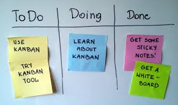

Kanban

Kanban oznacza spis widoczny. Pozwala na planowanie pracy i śledzenie postępów. Dzielimy zadania na minimum 3
kolumny: TO DO | DOING | DONE
Narzędzie pozwalające pracować w metodologi kanban trello.
Lekcja 03.01 Tydzień III + rozwiązania tydzień II
Lekcja 03.02 Kanban
Lekcja 03.03 WTF: HTML II
Lekcja 03.04 Opowieść o wężu, kebabie, wielbłądzie i Pascalu
Lekcja 03.05 WTF: CSS II
Lekcja 03.06 Jak działa Internet i przeglądarka
Lekcja 03.07 WTF: JavaScript
Lekcja 03.08 Terminal
Lekcja 03.09 Prace domowe tydzień III

Kanban oznacza spis widoczny. Pozwala na planowanie pracy i śledzenie postępów. Dzielimy zadania na minimum 3
kolumny: TO DO | DOING | DONE
Narzędzie pozwalające pracować w metodologi kanban trello.
Poznajemy nowe elementy:
<br> nowa lina
<b> <b> vs <i><em>
<v> <i> nie mają znaczenia semantycznego – służą do wyróżniania tekstu
<b> -podkreśla wysoką istotność i poważność frazy w nim zawartej
<em> - podkreśla, że tekst może mieć inne znaczenie( np. ironia).
<a href=”...” target=”...”> opis łącza</a> – a linki.
<element id=”moj-identyfikator”> atrybut id -identyfikuje element( przydaje się do nawigacji w
obrębie
dokumentu)
<nav> Nawivacja
<img src=”...” alt=”...”> img- obrazek o adresie
spis atrybutów „globalnych” link
* Pliki:małą literą, kebab-Case lub snake_Case
* Funkcje: camelCase
* Klasy: kebab-Case
* Zmienne: camelCase
* Stylowanie inline
* Id za pomocą #
* Klasa za pomocą . (kropki)
* Element po nazwie elementu
* Important po wartosci właściwości w naszej regule wpisujemy !important;
* HTTP : Protokół, którego używa Twoja przeglądarka (Hypertext Transfer Protocol)
* HTTPS : Protokół, którego używa Twoja przeglądarka wersja szyfrowana (Hypertext Transfer Protocol
Secure)
* URL : Uniform Resource Locator
- 1xx - wczytywanie
- 200 - wszystko ok
- 30x – szukasz w złym miejscu
- 404 –Nie znaleziono – serwer nie odnalazł zasobu według podanego URL ani niczego co by wskazywało na
istnienie takiego zasobu w przeszłości
-50x – Błąd zewnętrzny serwera
Aby dołączyć plik ze skryptem musimy wpisać na samym końcu naszego body <script src=”main.js”></script> . Kod JS uruchamia się raz (po załadowaniu strony).
ECMAScript jest to ustandaryzowany przez organizację ECMA skryptowy język programowania. JavaScript implementuje rzeczy ze specyfikacji ECMAScript. Rozwój ECMAScript mocno przyśpieszył przez szerokie wykorzystywanie JavaScriptu.
const firstName = 'Dominik';
const age = 30;
console.log(firstName);
console.log(age);
console.log(`Proste działanie: ${age} + 5 = ${age+5}`);
console.log('Inaczej zapisane');
console.log('Proste działanie: ' + age + ' + 5 = ' + (age+5));
cd~ przejście do katalogu domowego
ls ~ wypisanie zawartości katalogu
cd .. przejście do katalogu wyżej
cd nazwa-katalogu przejście do katalogu o podanej nazwie nazwa-katalogu
code . uruchomienie visual studio code w aktualnym katalogu
pwd wyświetlenie aktualnej ścieżki
mkdir nazwa-katalogu stworzenie katalogu o danej nazwie nazwa-katalogu
Praca domowa zrobiona!
Dodatkowe informacje na które natknąłem się w internetach, z własnej ciekawości
Z początku potrzebowałem tylko < i > . Skończyło się na wygooglowaniu ich. Ale przy innej okazji
wykopałem listę innych znaków.Aby wpisać określony znak wpisujemy & a następnie odpowiednie
znaki referencyjne do określonego literału np. dla > wpisujemy >
Oto lista:
< <
> >
" "
' '
& &
* Atrybut target pozwala na ustawienie kontekstu w jakim przeglądarka powinna go otworzyć.
target równy _blank otwiera link w nowej karcie w naszej przeglądarce.
target="_blank"
* Używając atrybutu title ustawiamy tytuł naszemu elementowi, np. dla obrazu, linku. Dzięki
czemu
użytkownikowi po najechaniu na element kursorem ukazuje się jego tytuł.
* <input type="text" disabled> oraz <input type="text" >
Powyższy kod HTML da efekt:
oraz
Atrybutowi disabled nie trzeba przypisywać wartości, ponieważ ma on tylko jedną. Samo
dołączenie go ustawia
wartość na „true” tzn. disabled=”disabled”